Тортики
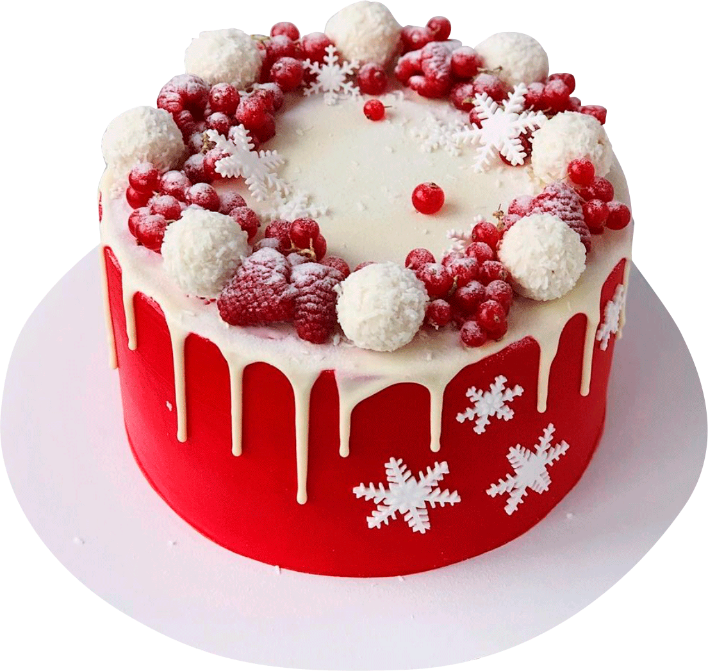Точной даты происхождения торта в том виде, каком мы его видим сегодня, нет.
По одной из версий, первая подобная сладость появилась около 3500 лет до нашей эры в Древнем Египте. Египетская версия торта готовилась из мёда, молока и пшеничной муки, и по началу не имела привычных нам слоёв теста. Готовили первые торты на раскалённых камнях. Чуть позже египтяне стали добавлять в десерт семена кунжута.
Есть и другие версии, согласно которым первый торт был приготовлен древними греками или итальянцами. Слово «торт» произошло от итальянского слова «torta», что означает круглый хлеб.
Более привычное воплощение торт обрёл во Франции во времена Людовика XIV. Именно тогда французские кондитеры начали создавать композиции из бисквита, безе и крема, глазури и ягод.
В России прототипом торта можно считать свадебный каравай — праздничную выпечку, символизирующую солнце и изобилие на столе ещё со времён Руси. Привычный нам торт появился лишь в царской России — во времена правления Петра I — под влиянием французской культуры
Интересные факты:
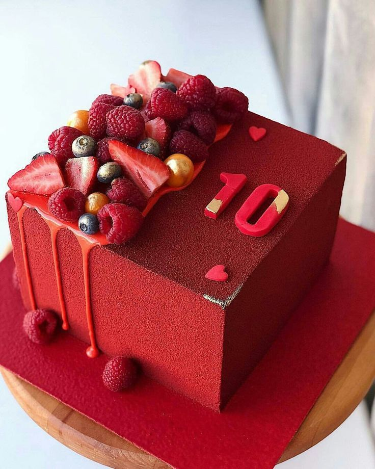
- В США в штате Алабама испекли самый тяжелый торт, весом 50 тонн. Основной частью десерта было мороженое. По форме торт напоминал изображение штата, которое используют на географических картах.
- В Перу кондитеры приготовили самый длинный в мире торт, длиной 246 метров. В качестве украшений использовали кремовые розы и цукаты. Кулинарный шедевр разрезали на 15000 кусочков и угостили ими перуанских детей, у которых в этом месяце был день рождения.
- В США в штате Мичиган приготовили самый большой торт. Его высота была свыше 30 метров. Состоял торт из 100 ярусов.
- Самому старому торту, найденному на чердаке южноафриканского фермера, более 100 лет. Его выпекли в честь золотой свадьбы в 1902 году. Почему его не подали к столу, осталось неизвестным. Выпечка смогла сохраниться до наших дней благодаря повышенной концентрации коньяка в составе торта.
- В России приготовили торт высотой 3 метра и весом 3 тонны. Десерт стал украшением праздника в честь дня рождения универмага ГУМ, расположенного в Москве. Оформлена выпечка была вкусным джемом и марципанами.
- Самый дорогой торт сделали в 2015 году по заказу миллионера из ОАЭ для его дочери, которая в один день отмечала помолвку и свой день рождения. Стоил он 75 млн. долларов и привел гостей в восторг своим необычным оформлением. На торте разместили сладкие фигурки знаменитых людей, а в качестве украшения использовали 4 тысячи различного окраса бриллиантов. В длину десерт был 2 метра, а весил 450 кг.
топ-5 самых любимых тортов в России по данным 2024 года
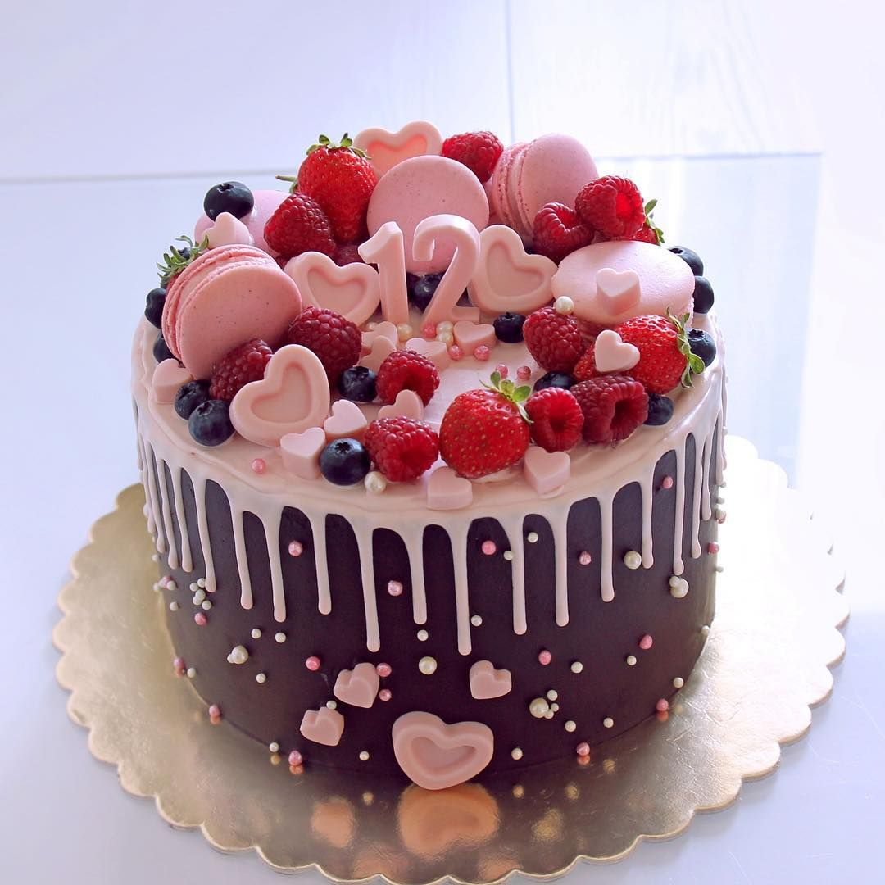
 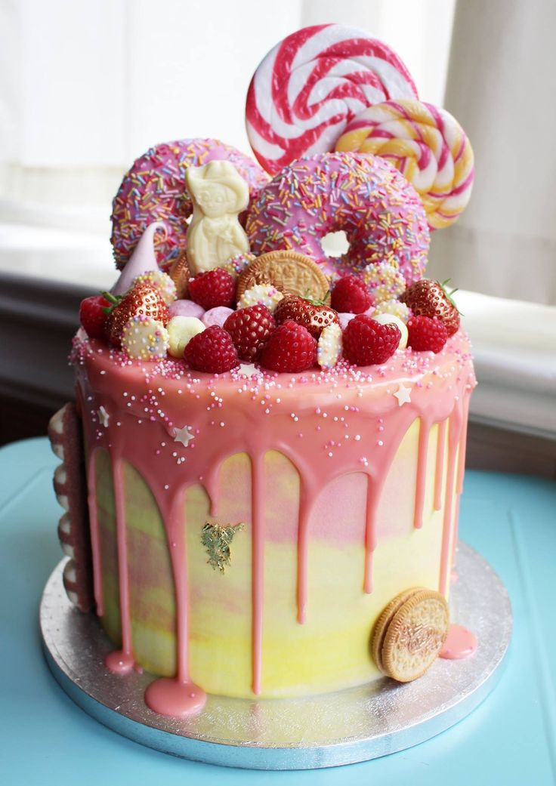
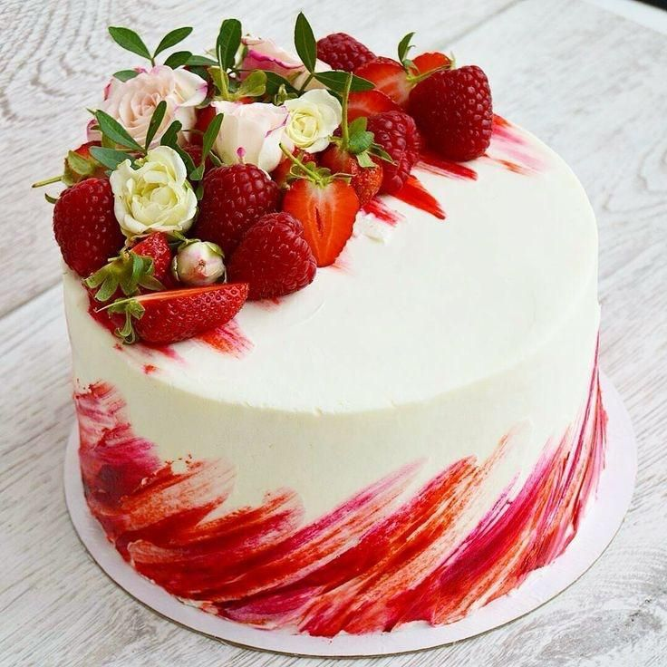
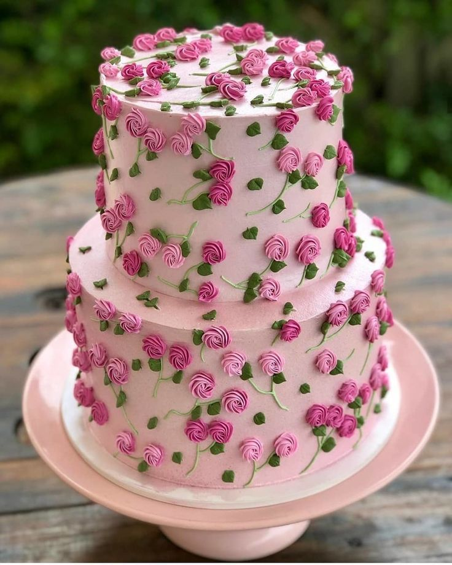
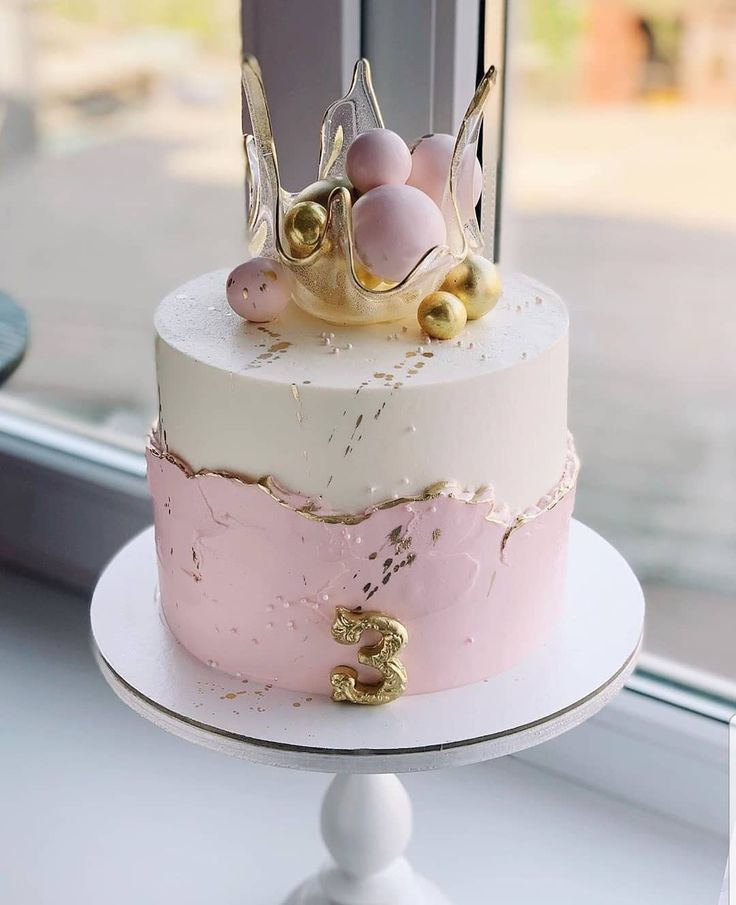
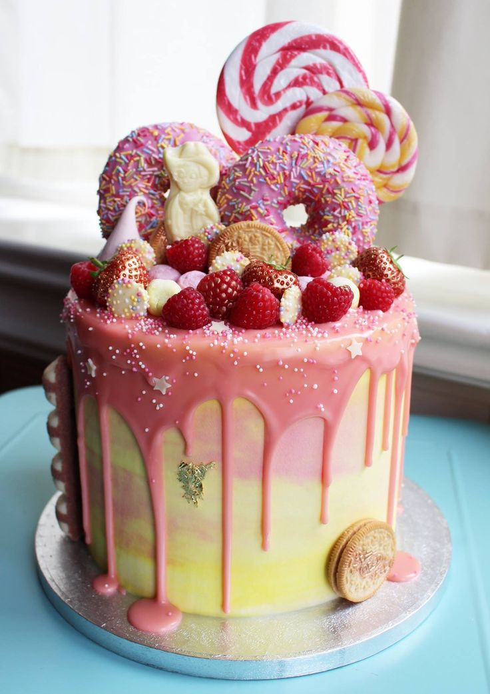
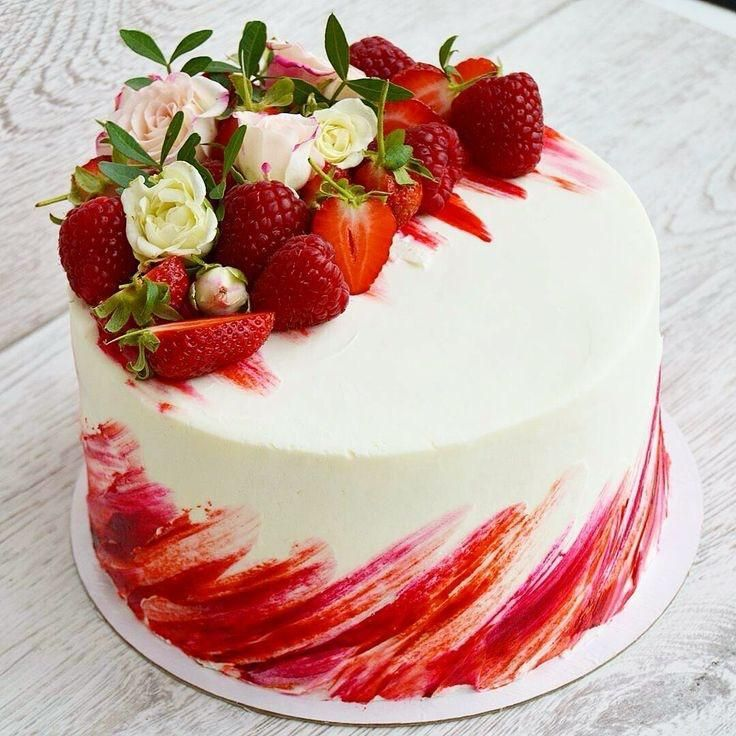
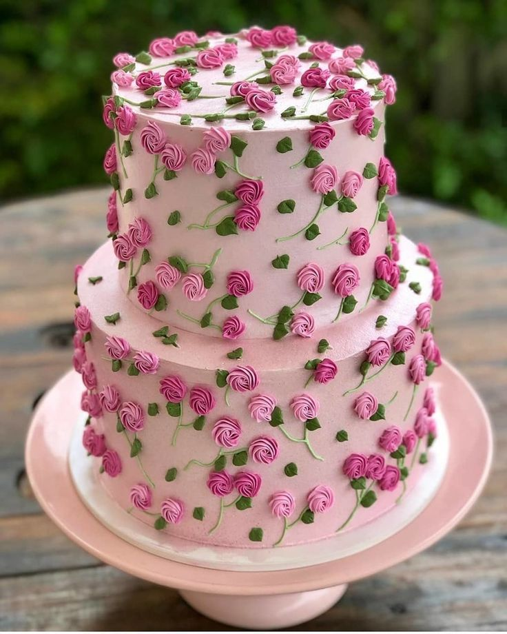
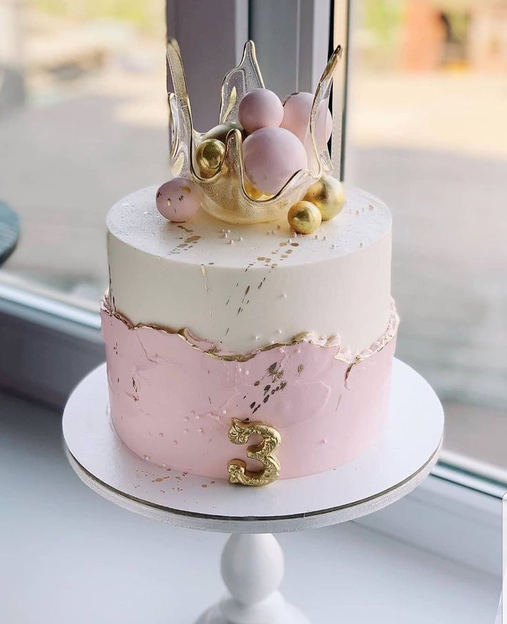